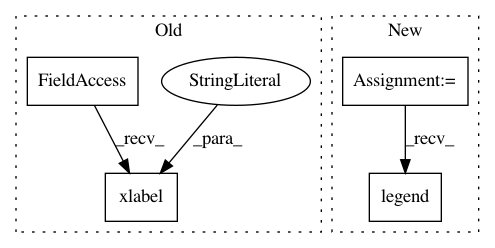

58d21081b729d857884d9c38e6e9122b7b61a27e,examples/datasets/plot_sdss_spectrum.py,,,#,12
Before Change
spec = fetch_sdss_spectrum(plate, mjd, fiber)
plt.plot(spec.wavelength(), spec.spectrum, "-k")
plt.xlabel(r"$\lambda (\AA)$")
plt.ylabel("Flux")
plt.title("Plate = %(plate)i, MJD = %(mjd)i, Fiber = %(fiber)i" % locals())
plt.show()
After Change
//------------------------------------------------------------
// Plot the resulting spectrum
ax = plt.axes()
ax.plot(spec.wavelength(), spec.spectrum, "-k", label="spectrum")
ax.plot(spec.wavelength(), spec.error, "-", color="gray", label="error")
ax.legend(loc=4)
ax.set_title("Plate = %(plate)i, MJD = %(mjd)i, Fiber = %(fiber)i" % locals())
ax.text(0.05, 0.95, "z = %.2f" % spec.z, size=16,
In pattern: SUPERPATTERN
Frequency: 3
Non-data size: 4
Instances
Project Name: astroML/astroML
Commit Name: 58d21081b729d857884d9c38e6e9122b7b61a27e
Time: 2012-10-21
Author: vanderplas@astro.washington.edu
File Name: examples/datasets/plot_sdss_spectrum.py
Class Name:
Method Name:
Project Name: uber/ludwig
Commit Name: 8e8a0c8384cce0b7bdb85ae08c85013f9090c5f3
Time: 2019-02-09
Author: piero@uber.com
File Name: ludwig/utils/visualization_utils.py
Class Name:
Method Name: lerning_curves_plot
Project Name: richzhang/colorization-pytorch
Commit Name: 1cc19c989ca609584119a1973845e72598d754d4
Time: 2018-09-03
Author: rzhang88@gmail.com
File Name: test_sweep.py
Class Name:
Method Name: